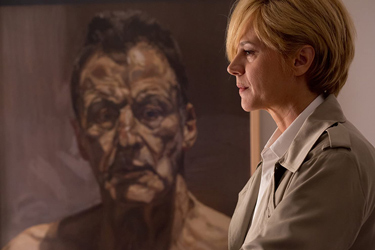
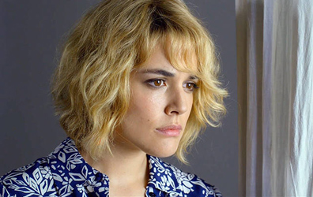
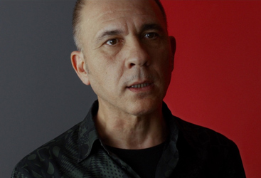
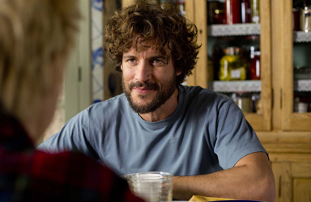
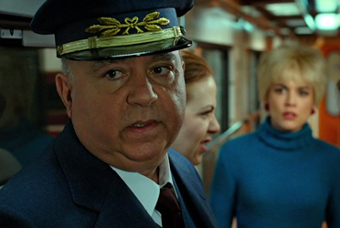
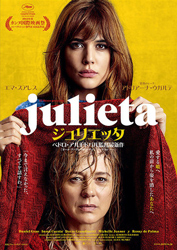
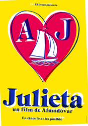
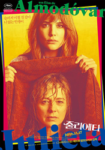
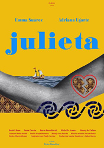
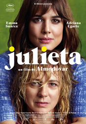

Emma Suárez - Julieta Arcos
Adriana Ugarte - Younger Julieta Arcos


Darío Grandinetti - Lorenzo Gentile
Rossy de Palma - Marian

Daniel Grao - Xoan (Julieta's partner)
Beatriz
Inocencio - Concierge
Beatriz's friend
Ava
Train Passenger
Beatriz (adolescent)
Sanáa (Julieta's parents' maid)
Agustín Almodóvar - Train Guard

Julieta lives in Madrid and is about to move to Portugal with her boyfriend Lorenzo. In a chance encounter on the street with her daughter Antía's childhood friend Beatriz, she learns that Antía, from whom she has long been estranged, is living in Switzerland and has three children. Overcome by her desire to re-establish contact with Antía, she abandons plans to leave Spain and instead leases an apartment elsewhere in the building in Madrid where she raised Antía, knowing that address is Antía's only means of contacting her.
Anticipating word from Antía, and aware that she owes her daughter an explanation of the events that led to their separation, Julieta fills a journal with an account of her life as mother, spouse, and daughter. She begins with the story of meeting Xoan, a fisherman and Antía's father. In a flashback, Julieta recounts meeting Xoan on a train, having fled to the restaurant carriage from an older man. He tells her about his life as a fisherman, and his wife who is in a coma. The train stops sharply, having hit the older man, who committed suicide. As Julieta blames herself for his death, Xoan comforts her, and they have sex on the train. Later, at the school at which she works, Julieta receives a letter from Xoan which she takes as an invitation to visit. She learns his wife has recently died and that he is with Ava, a friend. Julieta and Xoan resume their relationship, and she informs him that she is pregnant with his child. Two years later, Julieta and Antía visit Julieta's parents. Her mother is ill and apparently suffering from Alzheimer's disease, at first not recognising her daughter. Her father is having an affair with the maid, to Julieta's chagrin.
While an older Antía is at a summer camp, Xoan and Julieta argue over his occasional dalliances with Ava, prompted by the housekeeper. Julieta storms out to walk and Xoan goes fishing despite the weather. A storm rolls in and, as Julieta watches the news in panic, Xoan's boat capsizes and he is killed. His body is recovered and cremated, and together with Ava she gives Xoan’s ashes out over the sea. Rather than call her back for the cremation, Julieta has left Antía at camp where she has become inseparable with a girl from a wealthy family named Beatriz, who invite Antia to leave camp a day early and spend some time with them in Madrid. Julieta then travels to Madrid, to break the news of Xoan's death to her daughter, and rents a flat there. They remain in Madrid, each doing their own thing but without sharing their respective lives, loves and sorrows. At the age of 18, Antía embarks on a spiritual retreat and announces that she will be incommunicado for three months.
When Julieta drives to the location of the retreat in the Pyrenees three months later, she is informed that her daughter has found enlightenment and has already left: she does not want her location disclosed to her mother. Julieta is racked by the loss and her attempts to find Antía are unsuccessful. The only contact she has is a blank card on her 19th, 20th and 21st birthdays, which she recognises with a cake that ends up uneaten in the trash. After the latter she has enough, becomes enraged and destroys most traces of her daughter in her life, including moving from her apartment to escape Antia's memory. Years later she visits Ava, who has multiple sclerosis and is dying. Ava tells her that Antía knew about the argument that precipitated Xoan's death and blamed Julieta and Ava, and that she had ultimately internalised guilt about this because she was away at camp at the time. First in the hospital and then at Ava's funeral, Julieta meets Lorenzo who has had an affair with Ava and has written a book about Ava's art. For some time the two embark on a happy relationship, which distracts Julieta from her loss. She tells him nothing of Antía and he respects that she has some secrets in her life.
Back in the present, Lorenzo has gone to Portugal and Julieta's mental state is deteriorating as she obsessively visits places she used to go to with her daughter. Beatriz happens to recognise her as the two watch young girls play basketball, and reveals that she and Antía had a relationship. The spiritual retreat may have made Antía ashamed of it, and caused her to cut Beatriz out of her life just as she had done with Julieta.
Julieta continues to deteriorate, walking through the city in a dreamlike state. She recognises Lorenzo on the street and, walking toward him, is hit by a car and collapses. Lorenzo takes her to the hospital, and, as she recovers, he goes to pick up items from her flat, which include an unread letter. It is from Antía, who tells her about the death of her 9-year-old son, which has finally allowed her to understand how Julieta must have felt when Antía left without leaving word. She has included a return address, which Julieta interprets as an invitation to visit. Lorenzo and Julieta drive to Switzerland and Julieta says she will not demand an explanation, simply wishing to be with her daughter.





Debra Granik (2010) - Poster at the cinema.
Ryuichi Sakamoto